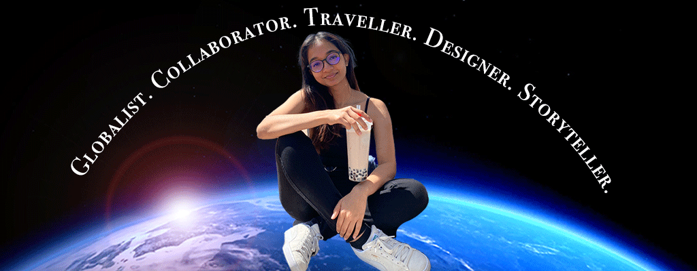

I am a designer and art director pursuing a degree of Communications Design at Syracuse University. I am also a Marketing Minor at Whitman School of Management.
I am an interdisciplinary designer with a passion for branding, packaging design, UI/UX design as well as information design. I am currently an Art Direction Intern at BARKER, an advertising agency based in New York City. I am a success scholar at Syracuse University, and I come with a variety of hard and soft skills such as leadership, communication, a team player, and a problem solver.
Outside of work, you will find me learning new languages, watching international TV shows, binge watching meal prep videos, and sometimes, yoga! Fun fact: I have been to about 15 countries and would love to travel to more!